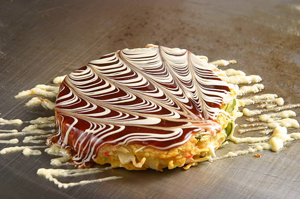

Cuisine
Savor the diverse and delicious flavors of Japanese culinary arts

Sushi & Sashimi
Fresh seafood expertly prepared in Japan's most iconic culinary tradition
Unagi
Delicious grilled freshwater eel glazed with sweet soy-based sauce

Okonomiyaki
Savory pancake filled with various ingredients, often called "Japanese pizza"

Ramen
Savor rich, flavorful broths and handmade noodles at local ramen shops

Yakitori
Delicious grilled chicken skewers, perfect with a cold beer
Katsu Curry
Crispy breaded cutlet served with rich Japanese curry sauce and rice